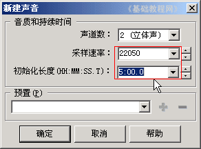
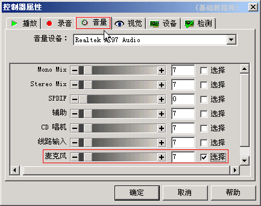
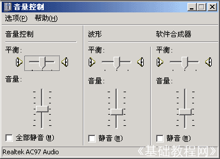
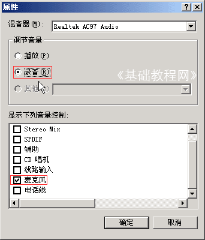
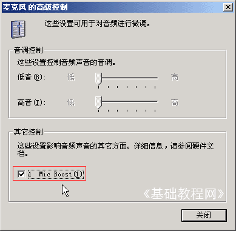
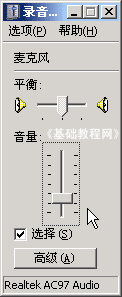

Goldwave 基础入门教程
六、如何录音 返回
这一节我们来学习在GoldWave中的录音操作，我们一般是录制麦克风中的语音，下面我们来看一个练习；
1、启动Goldwave
1）点击桌面上的Goldwave图标，或者在安装文件夹中双击Goldwave图标，就可以运行Goldwave；
2）第一次启动时会出现一个提示，这儿点“是”即可，自动生成一个当前用户的预置文件；
3）顺利进入后出现一个灰色空白窗口，旁边是一个暗红色的控制器窗口，它是用来控制播放的；
2、新建空白文件
1）点菜单“文件－新建”出来一个对话框；

把第二个采样率改为22050，下边的时间改为5分钟，点“确定”返回，窗口中出来空白文件；
2）点菜单“选项－控制器属性..”，出来一个面板，在第三个标签“音量”上点一下；

在面板中间的输入设备中，选择下边的“麦克风”打勾选中，也就是从麦克风中录音，点“确定”返回；
3）将麦克风插到电脑上，红色插头插到红色插孔中，
然后在Goldwave右侧控制面板上，点击红色圆点的“录音”按钮，然后对着麦克风说话就可以了；
点击红色的方块按钮，是停止，两条竖线是暂停录音；
4）如果录音音量太小，可以到“音量属性”中修改；
①在任务栏右下角的小喇叭图标上双击，打开音量属性；

②点菜单“选项－属性”命令，出来一个面板，在中间选择“录音”，在下面把麦克风打勾，其他去掉，点“确定”返回；

③再点菜单“选项－高级控制”命令，在面板下面出来一个“高级”按钮，点击这个按钮；

④把下面的1 Mic Boost打勾选中，这样录音音量会增加许多，点关闭回到面板中，把音量适当降低；

这样就调整好了音量，回到Goldwave中继续录音即可；
本节学习了使用Goldwave录音的基本操作，如果你成功地理解并完成了练习，请继续学习下一课内容；
本教程由86团学校TeliuTe制作|著作权所有
基础教程网：http://teliute.org/
美丽的校园……
|
|
转载和引用本站内容，请保留作者和本站链接。